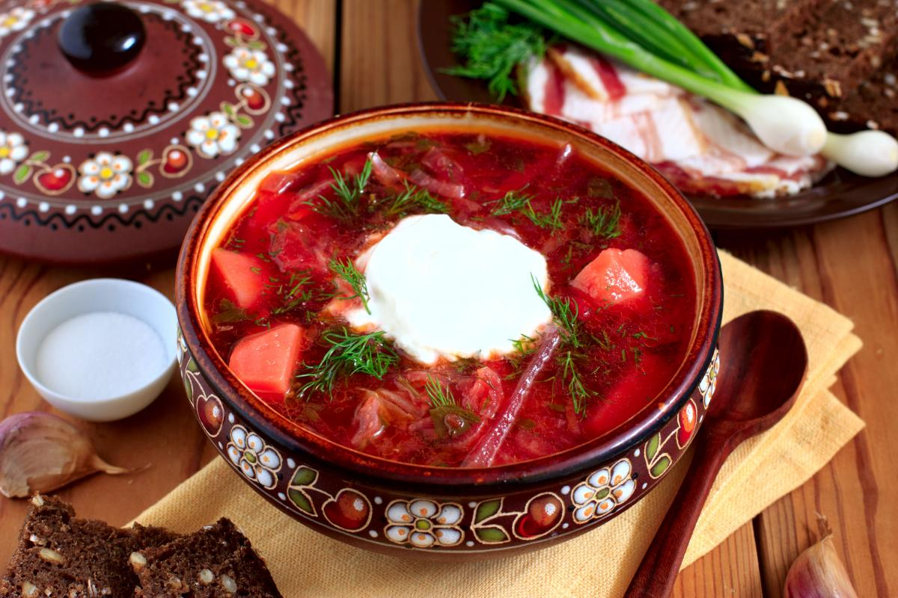

<!DOCTYPE html>
<html>
<head>
    <meta charset="utf-8"/>
    <title>homeWork1</title>
</head>
<body>

<div id="book"></div>
<div id="band"></div>
<div id="recipe"></div>

<script crossorigin src="https://unpkg.com/react@18/umd/react.production.min.js"></script>
<script crossorigin src="https://unpkg.com/react-dom@18/umd/react-dom.production.min.js"></script>
<script src="https://unpkg.com/@babel/standalone/babel.min.js"></script>

<script type="text/babel">
    // Задание 1
    const bookStyle = {
        maxWidth: '415px',
        border: '1px solid #ccc',
        padding: '10px',
        margin: 'auto',
        borderRadius: '8px',
        backgroundColor: '#f9f9f9',
        textAlign: 'center'
    };

    const imageStyle = {
        width: '100%',
        maxWidth: '90%',
        borderRadius: '8px',
        margin: '10px 10px',
        textAlign: 'center'
    };

    const BookInfo = () => (

        <div style={bookStyle}>
            <h1>Задание 1:<br/>Информация о книге</h1>
            <h2>Информация о книге</h2>
            <p>Название книги: Мастер и Маргарита</p>
            <p>Автор: Михаил Булгаков</p>
            <p>Жанр: Роман</p>
            <p>Количество страниц: 480</p>
            <div>
                <h3>Рецензии:</h3>
                <p>Рецензия 1: Величайшее произведение литературы.</p>
                <p>Рецензия 2: Захватывающий сюжет и глубокие философские размышления.</p>
                
            </div>
        </div>
    );

    ReactDOM.createRoot(document.getElementById('book')).render(<BookInfo/>);

    // Задание 2
    const bandStyle = {
        maxWidth: '415px',
        border: '1px solid #ccc',
        padding: '10px',
        margin: '50px auto',
        borderRadius: '8px',
        backgroundColor: '#f9f9f9',
        textAlign: 'center'
    };

    const imageStyleAlbum = {
        width: '100%',
        maxWidth: '300px',
        maxHeight: '300px',
        borderRadius: '8px',
        margin: 'auto'
    };

    const BandInfo = () => (
        <div style={bandStyle}>
            <h1>Задание 2:<br/>Информация о музыкальной группе</h1>
            <h2>Информация о музыкальной группе</h2>
            <p>Название группы: The Beatles</p>
            <div>
                <h3>Участники группы:</h3>
                <p>Джон Леннон</p>
                <p>Пол Маккартни</p>
                <p>Джордж Харрисон</p>
                <p>Ринго Старр</p>
            </div>
            <div>
                <h3>Альбомы:</h3>
                <p>Abbey Road</p>
                
                <p>Sgt. Pepper's Lonely Hearts Club Band</p>
                
            </div>
        </div>
    );

    ReactDOM.createRoot(document.getElementById('band')).render(<BandInfo/>);

    // Задание 3
    const recipeStyle = {
        maxWidth: '415px',
        border: '1px solid #ccc',
        padding: '10px',
        margin: 'auto',
        borderRadius: '8px',
        backgroundColor: '#f9f9f9'
    };

    const recipeStyleDiv = {
        margin: 'auto',
        textAlign: 'center'
    };

    const RecipeInfo = () => (
        <div style={recipeStyle}>
            <h1>Задание 3:<br/>Информация о рецепте</h1>
            <h2>Информация о рецепте</h2>
            <p>Название рецепта: Борщ</p>
            <div>
                <h3>Ингредиенты:</h3>
                <p>Свекла - 2 шт</p>
                <p>Морковь - 1 шт</p>
                <p>Картофель - 3 шт</p>
                <p>Капуста - 1/2 шт</p>
                <p>Мясо - 500 г</p>
                <p>Томатная паста - 2 ст.л.</p>
                <p>Лук - 1 шт</p>
                <p>Чеснок - 2 зубчика</p>
            </div>
            <div>
                <h3>Последовательность приготовления:</h3>
                <p>1. Отварить мясо до готовности.</p>
                <p>2. Добавить картофель и варить до полуготовности.</p>
                <p>3. Добавить капусту и продолжать варить.</p>
                <p>4. Приготовить зажарку из лука, моркови и свеклы, добавить томатную пасту.</p>
                <p>5. Добавить зажарку в борщ, доварить до готовности всех ингредиентов.</p>
                <p>6. Добавить чеснок, соль и специи по вкусу, варить еще 5 минут.</p>
                <p>7. Подавать со сметаной и зеленью.</p>
            </div>
            <div style={recipeStyleDiv}>
                
            </div>
        </div>
    );

    ReactDOM.createRoot(document.getElementById('recipe')).render(<RecipeInfo/>);

</script>
</body>
</html>